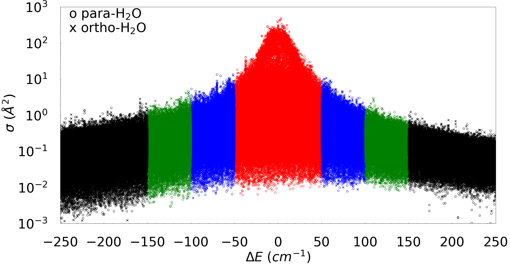

Quantum control of chemical reactions and inelastic scattering of molecules remain at the forefront of modern theoretical and computational chemistry. Quantum control can be achieved through quantum interference effects or quantum state preparations of molecular states, e.g., controlling alignment or orientations of the reactant molecules, generally referred to as stereodynamics. These effects are amplified at low temperatures where quantum effects dominate.
Recent advances in molecular cooling and trapping technologies have also led to renewed interest in inelastic and reactive collisions of atom-molecule and molecule-molecule systems. Indeed, collisions of cold and ultracold diatomic molecules are an active area of experimental and theoretical research due to their applications to quantum sensing, ultracold chemistry, quantum computing, and quantum information processing. Although, diatomic species such as CaF, SrF, RbCs, KRb, NaK, etc. are preferred molecules for such applications, their small rotational constants lead to high densities of states making rigorous quantum calculations of diatom-diatom collisions involving these molecules computationally intractable. Therefore, lighter diatomic molecules, such as H2 and its isotopologues, are generally preferred to benchmark theoretical studies against experiments. These systems are characterized by large rotational constants and low densities of states, thus requiring only a small number of orbital angular momentum partial waves to yield converged cross sections in the micro-kelvin (ultracold) range of collision energies.
Prof. Richard N. Zare and his reseach group at the Stanford University have recently developed a coherent optical technique, called Stark-induced adiabatic Raman passage (SARP), to study quantum controlled cold collisions of light molecular systems, such as H2, HD and D2. The SARP technique allows preparation of a phase-coherent superposition of degenerate alligned states (mj) within a single ro-vibrational state. Additionally, the colliding partners are adiabatically expanded and co-propagated in the same molecular beam, yielding relative collision energies in the 1 kelvin regime for collisions involving H2 and its isotopologues. This provides a powerful approach to probe stereodynamics in collision of quantum state-prepared and aligned molecules. In recent years, they have advanced the experimental research in this area by exploring quantum-controlled collisions of light molecular systems employing the SARP technique. While the initial experiments focused on state-prepared HD colliding with unprepared H2 and D2, subsequent studies investigated simpler atom-diatom collisions, such as HD + He, D2 + He, and D2 + Ne, which allow simplified interpretation and analysis of experimental data as collisions are often dominated by isolated partial waves in the 1-10 K regime. Recently, SARP experiments on collisions of two aligned D2 molecules prepared in the v = 2, j= 2 initial state were reported that measured four-vector correlations in bimolecular collisions. SARP experiments have also been reported for the chemical reaction by another research group between aligned HD(v = 1, j= 2) and H leading to the D+H2 product using crossed molecular beams.
Please refer to our research article for more details. A brief description is provided here.
The goal of this work is to carry out a rigorous theoretical investigation of rotational quenching of HD and D2 by collisions with He for vibrational levels v = 2 and v = 4 and rotational levels j = 2 and j = 4 of the two molecules. Prior studies of He + HD for v =1 and He + D2 for v = 2 employed the BSP3 potential energy surface (PES) for the He-H2 system. This potential is computed at the coupled-cluster level with single, double, and perturbative triple excitations [CCSD(T)] augmented with corrections for higher-order excitations up to the full configuration interaction (FCI) level and the diagonal Born-Oppenheimer correction (DBOC). However, the DBOC corrections were computed for the most abundant He-H2 isotopologue. Here, we eliminated this minor deficiency of the potential by constructing separate mass-dependent DBOC corrections for the He-HD and He-D2 systems to arrive at the optimal interaction potentials for the specific isotopic variants. While these DBOC corrected potentials yield almost identical results as the original BSP3 surface, they remove one perceived source of uncertainty in the ab initio interaction potentials adopted in the scattering calculations.
In this work, we primarily focus on rotational quenching from j = 2 → j' = 0 and j = 2 → j' = 1 in v = 2, j = 2 → j' = 1 and j = 4 → j' = 3 in v = 4 for HD, and j = 4 → j' = 2 and j = 2 → j' = 0 in v = 4 for D2, induced by collisions with He in the cold energy regime. These initial states of HD and D2 were the focus of recent SARP experiments by the research group of Prof. Richard N. Zare at the Stanford University.
A comparison between the experimental H-SARP angular distribution and our theoretical results for rotational quenching in HD (v = 2, j = 2)+ He collisions is also done. We also compared the experimental data for the same rotational transition (Δj = -2) in v = 2 with our theoretical results. The comparison is favorable for both Δj = -2 and Δj = -1 transitions for forward and backward scattering angles. However, there is a strong discrepancy between experiment and theory for the Δj = -2 transition (v = 2) near the central peak, for which the sideways peak in the experimental result is nearly as intense as the forward and backward scattering peaks while the theory results show a dip with a flat DCS. Interestingly, the sideways peak is not observed in H-SARP experiments for HD(v = 1), and there is indeed a good agreement between our calculations and v = 1 experiments. According to our calculations, both the position and the relative intensity of the l = 1 resonance are largely independent of the vibrational state of HD. This, together with the experimental velocity distribution (which is similar for v = 1 and v = 2), leads us to the prediction that similar experimental angular distributions should be obtained for v = 1 and v = 2 (as it happens in our calculations). Hence, the better agreement between our calculations and the v = 1 H-SARP experiments is not surprising but the differences in the sideways region between v = 1 and v = 2 H-SARP experimental angular distribution indicate inconsistency between the experimental measurements.
Please refer to our research article for more details. A brief description is provided here.
Resonant scattering of highly vibrationally excited and aligned D2 in cold collisions with Ne has recently been probed experimentally using the Stark-induced adiabatic Raman passage (SARP) technique by the research group of Prof. Richard N. Zare. A partial-wave analysis and numerical fitting of the experimental data attributed the measured angular distribution to an l = 2 shape resonance near 1 kelvin. Here, we report computation of a new potential energy surface for the Ne-H2 interaction suitable for the study of collisions between highly vibrationally excited H2 and D2 with Ne as well as quantum scattering calculations of stereodynamics of D2(v = 4, j = 2) + Ne collisions probing Δj = -2 rotational transition in D2.
First, we compare our results with available experimental results obtained at thermal collision energies using crossed molecular beams. Unfortunately, very limited data exist for H2, D2 and HD in collision with Ne and the available experimental results correspond to the work of Andres et al., Buck et al., Gerber et al., and Faubel et al. from nearly four decades ago. The measurements were carried out at collision energies of Ec = 765.9, 691.2 and 254.1 cm-1 for H2, D2 and HD, respectively. The agreement between the two results is excellent for all H2 isotopologues in the entire range of scattering angle despite the large variation in the magnitude of the DCS for the different state-to-state transitions. It is striking to see the oscillatory behavior of the DCS arising from interference between different partial wave contributions quantitatively reproduced by our calculations for HD + Ne collisions. The experimental values are reproduced as given in the relevant references quoted above and no scale factor is applied. The DCSs for the elastic transition, j = 0 →j' = 0 and the dominant inelastic transition, namely j = 0 →j' = 2 for both H2 and D2 are also accurately reproduced. Slight differences seen for the weaker j = 1 →j' = 3 transition can be attributed to the mild anisotropy of the PES as explained in earlier works by Lique and Faubel et al. However, even for this weaker transition, our results are in good qualitative agreement with experiment.
Our main goal of this project is to compare against the SARP experiments by the research group of Prof. Richard N. Zare for rotational quenching of j = 2 →j' = 0 in v = 4 of D2. As such, cross sections for pure rotational transitions are orders of magnitude larger than ro-vibrational transitions for weakly interacting systems such as rare-gas H2. When we inventigated the ICS for this transition as a function of the collision energy, a strong resonance was found at ~2 cm-1 with a peak cross section value of about ~20 Å2. A secondary resonance feature occurs at an energy of ~5 cm-1 with a cross section of about ~2 Å2, about an order of magnitude smaller compared to the primary peak. A partial-wave analysis of the ICS is done as well. It is found that the primary peak is due to an l = 5 resonance originating from total angular momentum J = l' = 3, 5, and 7.
A comparison between the experimental angular distribution reported by the research group of Prof. Richard N. Zare and our theoretical results is done including contributions from all relevant partial waves (both even and odd) in the energy-resolved DCS for both the H-SARP and X-SARP preparation for the j = 2 →j' = 0 transition. The comparison is reasonable for both the H-SARP and X-SARP preparations. However, the rates around the central peak in the experimental and theoretical results are largely out-of-phase, compared to the forward and backward scattering peaks. It should be noted that for small relative collision energies the transverse velocity, perpendicular to the beam propagation, can be significant so that the angle of the actual relative velocity with respect to the pump and Stokes polarizations, β , is no longer the nominal one, β = 0o for H-SARP, or β = 90o for V-SARP.
Please refer to our research article for more details. A brief description is provided here.
In this work, we performed full-dimensional quantum calculations of stereodynamic control of HD(v = 1, j = 2) + D2 collisions for the first time that has been probed experimentally by Prof. Richard N. Zare and his reseach group at the Stanford University using the Stark-induced adiabatic Raman passage (SARP) technique. It is found that the dominant inelastic channel in the rotational quenching of HD from vHD = 1; jHD = 2 → v'HD = 1; j'HD = 0 involves an energy transfer to D2 leading to jD2 = 0 → j'D2 = 2 rotational excitation of the D2 molecule. This transition conserves the total molecular rotational angular momentum and has a cross section that is four times larger than that of direct relaxation of HD without D2 rotational excitation.
The agreement is less satisfactory with recent SARP experiments that report stereodynamic control of rotational quenching in HD(vHD = 1, jHD = 2) + D2 collisions. While our results generally agree with experiments for the jHD = 2 → j'HD = 1 transition, a significant discrepancy is observed for the jHD = 2 → j'HD = 0 transition in HD. The discrepancy persists regardless of whether D2 rotational excitation channel is considered in the theoretical simulations. We believe, a re-analysis of the experimental data including the D2 rotational excitation channel in D2(j = 0) collisions or measurements of energy resolved cross sections may help resolve the discrepancy.
On contrary, our computed results are in excellent agreement with prior calculations and measurements of differential cross sections for elastic and rotationally inelastic collisions of HD and D2 at higher collision energies.
One of the major interests of astronomers is to observe different bodies in our solar system. Several state-of-the-art observatories, like Atacama Large Millimeter Array (ALMA) radio telescope, and other space-exploration telescopes, such as the Spitzer space telescope and, most recently, the James Webb space telescope (JWST), have been deployed to obtain data. Some of the recorded data are already available, and more will become available in the upcoming years. To understand and correlate with the observed rotational spectra obtained by ALMA or JWST missions, we need modeling with radiation transfer codes, such as RADEX, LIME, or MOLPOP, which in turn requires state-to-state collisional rate coefficients as input for the rotational excitation and quenching processes because the observed spectra is a result of these collisional processes between different molecules in a cometary coma. These rate coefficients are rather hard to derive compared to radiative decay coefficients, and thus, primarily unavailable, particularly for complex systems like H2O + H2O and HDO + H2O. In addition to these, some of the much needed rate coefficients of the inelastic collisions for the astronomical modeling include CH3OH + CO, H2O + HCN, H2CO + CO, H2O + CH3OH.
Databases like BASECOL and LAMDA have been developed for astronomers to simplify this process of obtaining rate coefficients of different collisions. These databases are being populated by many scientists every day to supply collisional rate coefficients for modeling the radiation transfer processes. These rate coefficients can be computed by quantum mechanical treatment of the internal molecular states and implemented in a few codes available in the scientific community, such as MOLSCAT, HIBRIDON, TwoBC and more recently, MQCT.
Even though, MQCT can run simulations of collision of complex molecules, such as two asymetric-top-rotors like H2O + H2O, the computational complexity remains challenging. As elaborated by my research during my Ph.D. and Postdoctoral tenure at Marquette Univeristy, the computation of these databases for H2O + H2O collisions required to compute four large matrices containing state-to-state transition elements, and then the simulation of mixed quantum/classical trajectoris. Computation of each of these matrices took about 676 thousand CPU hours. Additionally, the total cost of the scattering calculations (trajectory simulations) for six collision energies was about 5.25 million CPU hours. Altogether, the cost of the MQCT calculations of H2O + H2O collisions was nearly 8 millions CPU hours. More importantly, several months of human efforts were needed to put into running new calculations, monitor the ongoing simulations, to check results for completed runs, and finally numerous post processing analysis to convert from individual state-to-stare transitions cross sections computed by MQCT code to the rate-coefficients to be deposited to the databases as a end result.
Our research employs a machine-learning model to compute more rate-coefficients for complex collisions, such as H2O + H2O using the existing computed data. In this work, we propose a methodology that exploits the physical nature of the cross sections or rate coefficients data to train and build a multi-layer perceptron (MLP) model using neural-network. This methodology is expected to be computationally faster than the acutal quantum scattering calculations on average by orders of magnitude. At the same time, the proposed workflow is robust, and general enough to apply for other important molecular collisions, like H2O + HDO, H2O + HCN, H2O + CH3OH, H2CO + CO.
The article is under review and the DOI-link will be updated soon. A brief description is provided here.
The dependencies of cross sections on the energy difference between initial and final states of the colliding partners indicate a single-exponential behavior near ΔE = 0 regime, while a double-exponential behavior over the entire range of ΔE. This observation remain valid for a very large deviation of ΔE on both excitation (ΔE >0) and quenching (ΔE < 0) wings. Additionally, it is also observed that the variation of cross sections changes by several orders of magnitude as the energy difference ΔE increases. In this project, our focus is to exploit this exponential nature of the data depending on the ΔE and use that for our advantage as a selection criteria for preparing the training data set and then build the MLP model. The whole set of the available data is divided into three segments based off of only the energy difference between initial and final state (ΔE). To compose our training data set, we included cross sections for those transitions where the energy difference (ΔE) between initial and final levels of H2O + H2O molecules lies within a specific value, say Ecut for each collision energy (Ec). The validation data set is created by taking cross sections for all those transitions where the energy difference ΔE is between the previous value and a smaller addition to the value of Ecut (i.e., Ecut + δEcut). And, finally, corss sections for all the remaining transitions are used as the testing data set.
In general, the idea is that the training data set consists of all cross section values for which the energy difference of the transition lies within a certain range, and another additional smaller range of energy difference would serve as a validation data set. Finally, all the cross sections for the remaining transitions are taken as the test data set. In this work, multiple values of Ecut is tested for our MLP modelling to optimize the computational efficiency and accuracy of our MLP model. Each of our data set has thirteen features for our multilayer perceptron (MLP) modeling: rotational quantum numbers of initial and final states of the first water molecule (j1 ka1 kc1, j'1 k'a1 k'c1), and the second water molecule (j2 ka2 kc2, j'2 k'a2 k'c2), and energy difference between initial and final states of the molecular system, ΔE.
Once the data set is finalized, we started building our MLP model using neural-network. Our MLP model is composed of one input layer with thirteen neurons corresponding to each features of our data set. Then we have five hidden layers with each having 128 neurons. The number of hidden layers and number of neurons in each layer was found through manual search and decided based on the best performance of the model. In the end, there is one output layer with a single neuron corresponding to the cross section.
At this point, we are ready to compare the TACS computed using individual state-to-state transition cross sections between the actual MQCT data and the MLP model predicted data. We looked into an intermedite range of the rotational temperature T = 300 K, corresponding to room temperature. Six different values of collision energies of Ec = 133, 200, 267, 400, 533, and 708 cm-1 are computed separately and compared for each of the collision energies between the actual MQCT data vs. the MLP model computed data. The transitions between para-H2O molecules and ortho-H2O molecules are also separately tested. The agreement is found to be excellent overall. Some differences are seen when the value of TACS become relatively smaller.
One of the major interest of scientists in chemistry is to understand reactions better. When we look at a reaction from a microscopic level, a reaction is nothing but a form of molecular scattering. Therefore, reactive scateering is crucial to get more insight into chemical reaction. Studies of gas phase elementary reactions are at the forefront of the chemical reactions being more managable to conduct experiments. However, getting more insight of a reaction at quantum level is rather challanging. For example, at around room temperature (300 K), molecules occupy a significant number of rovibrational levels, which lead to the experimental observations being an averaged effect. As we move to lower temperatures (about 10 K), only the first few rovibrational levels get occupied and hence, it involves only a few partial waves. In the ultracold regime (micro-kelvin and below), only one or first few initial low-lying partial waves are associated with collision allowing complete control of the colliding partners. Unraveling insights on chemical reactions and molecular interactions at fundamental quantum level advances the research of the molecular cooling and trapping technologies. It also has numerous applications to quantum sensing, ultracold chemistry, quantum computing, and quantum information processing.
Due to the strong interaction potential, alkali metals have been especially interesting to researchers in this field.
For example, a recent study was conducted by our group in the past for the reaction of
Li + LiNa → Li2 + Na.
There have been much progress made in the scientific community using litium dimers (Li2), but the
lithium trimers have not been explored much. My goal for this project is to study reaction of lithium trimer tigether
with isotopic substitution.
Li7 + Li62 → Li7Li6 + Li6.
This is a work in progress, and soon will update more details on the project.